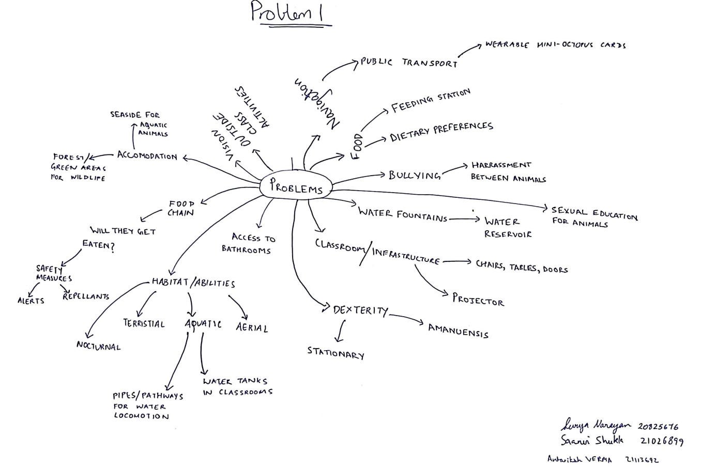

Project 1: Visiting Students from the Animal Kingdom
This project imagines a welcoming environment at HKUST for visiting students from the animal kingdom. The goal was to identify their unique characteristics and needs to enhance their experience on campus.
Needfinding
User Characteristics
- Form: Various animal shapes and sizes.
- Ability: Different modes of communication (sounds, body language).
- Language: Non-human languages needing translation.
- Habits: Varied dietary needs and social behaviors.
Needs and Obstacles
- Access to suitable food and habitats.
- Safe navigation across campus.
- Communication barriers with human students.
- Social integration challenges.
Ideation Process
Brainstorming potential problems with current facilities and services highlighted key issues:
- Lack of animal-friendly dining options.
- Inaccessible areas for larger or different beings.
- Need for translation services for effective communication.
Mindmap
Below can be seen the mind map developed during the ideation phase. It helped visualize the various aspects and considerations necessary for creating an inclusive environment.
Personas
This image showcases the personas created to represent the diverse student population. These personas were instrumental in guiding the design decisions and ensuring a user-centered approach.
Specific Needs and Obstacles

This image outlines the specific needs and obstacles faced by the target users. Identifying these helped focus the project on addressing the most critical issues.
My Contributions
Contributed to brainstorming sessions and developed a persona representing one of the animal students, which helped in identifying specific needs and challenges.
Personal Reflections
This project taught me the importance of empathy in design and how diverse perspectives can enrich the problem-solving process.
Project 2: TravelBuddy
This project focuses on developing TravelBuddy, a voice agent/chatbot designed to facilitate hospitality services. The goal was to alleviate the stress of planning trips, especially for students.
Empathize
The focus was narrowed down to one sector of hospitality, utilizing mind-mapping structures to identify use-cases and potential stakeholders. An online survey was created to gather insights:
Mind Map
Here is the mind map that illustrates the various ideas generated during our brainstorming sessions. It served as a foundational tool for understanding user needs.
User Survey Results
The user survey results are shown above. These insights were critical in identifying common challenges faced by travelers.
Common challenges faced during travel include:
- Language Barriers
- Finding Reliable Information
- Time Management
- Cost of Travel
- Safety Concerns
- Difficulty in Making Friends
User Interview Insights
An interview with an exchange student provided personal insights. Key takeaways include:
- Users prefer spontaneity for short trips but need itineraries for longer travels.
- Last-minute itinerary problems are manageable for spontaneous travelers.
- Depth of research varies by trip type; users may not feel they miss attractions they weren't aware of.
Identified User Behaviors and Bottlenecks
Research revealed:
- Users tend to prefer minimal effort for maximum benefits.
- Budget constraints are crucial for maximizing enjoyment.
- Many users lack knowledge about international destinations.
- Budget planning is cumbersome due to unpredictable costs.
- Finding reliable information is often difficult and time-consuming.
Our Solution
An AI agent was proposed to allow users to plan trip itineraries effortlessly, addressing the identified needs and challenges.
POVs (Points of View)
Personas representing target users were constructed to guide the design process:
These personas were created to capture the diverse needs of our users, ensuring their perspectives were considered in the design.
HTA Flow Diagram
The Hierarchical Task Analysis (HTA) flow diagram illustrates the steps users take when interacting with the chatbot:

GOMS Flow Diagram
The Goals, Operators, Methods, and Selection rules (GOMS) flow diagram provides insights into the cognitive processes of users:
Prototyping Process
Low-fidelity and high-fidelity prototypes were developed using tools like Figma and Next.js, incorporating user feedback from surveys and interviews.
Heuristic Analysis
A heuristic analysis was conducted to identify usability issues:
- Inconsistent UI elements.
- Lack of icons for better mapping.
- No clear "Submit" button leading to confusion.
- Insufficient feedback during signup.
- Content overflow in input boxes.
Usability Testing
Utilizing "Conceptual Model Extraction" as the testing protocol allowed users to articulate their thought processes while using the app. Findings included:
- Users tended to write short descriptions, indicating a need for clearer instructions.
- Navigating back to the home page was not intuitive.
- Longer inputs overflowed, indicating the need for better input management.
My Contributions
Responsibilities included creating the Google Forms survey, developing the HTA and GOMS flow diagrams, and understanding user interactions to improve the design.
Prototype Demo
Here’s a video demonstration of the prototype:
Personal Reflections
This project reinforced the importance of user-centered design and empathy in technology. Synthesizing user research into actionable insights proved to be invaluable. I found great satisfaction in seeing how my contributions could directly impact the design process.
Project 3: VR Cultural Connection Abroad
This project focuses on using extended reality (XR) to support local communities by reconnecting individuals with their culture and history.
Mind Map of Features
This mind map details the features proposed for the app, helping to visualize the various functionalities aimed at enhancing cultural connections.
Empathize
A user scenario was identified for supporting expatriates feeling isolated from their culture. The choice was justified through needfinding and surveys conducted with potential users.
User Survey Results
Survey results indicate the key issues faced by users, providing a foundation for our design decisions.
This image further illustrates the demographics of respondents, giving context to the user needs we aimed to address.
User Personas
These personas reflect the diverse backgrounds of potential users, guiding the development of features that resonate with their experiences.
HTA Flow Diagram
The Hierarchical Task Analysis (HTA) flow diagram illustrates the steps users take to reconnect with their cultural roots:
GOMS Flow Diagram
The Goals, Operators, Methods, and Selection rules (GOMS) flow diagram outlines user interactions with the XR platform:
Prototyping Process
A prototype was created to demonstrate key features, including virtual cooking workshops and social VR spaces.
Prototype Demo
Here’s a video demonstration of the prototype:
Evaluation
Qualitative user evaluations were conducted to gather feedback and improve the design based on user interactions.
My Contributions
I focused on creating the survey, developing HTA and GOMS flow diagrams, and gathering user insights to inform design decisions.
Personal Reflections
This project highlighted the power of XR in fostering cultural connections and the importance of understanding user needs in design. It has inspired me to explore how technology can bridge gaps between cultures.